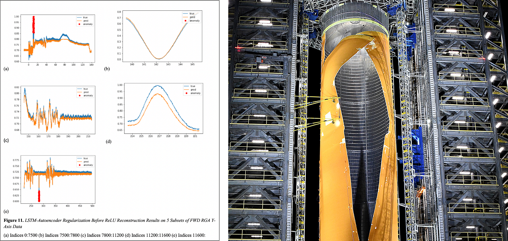
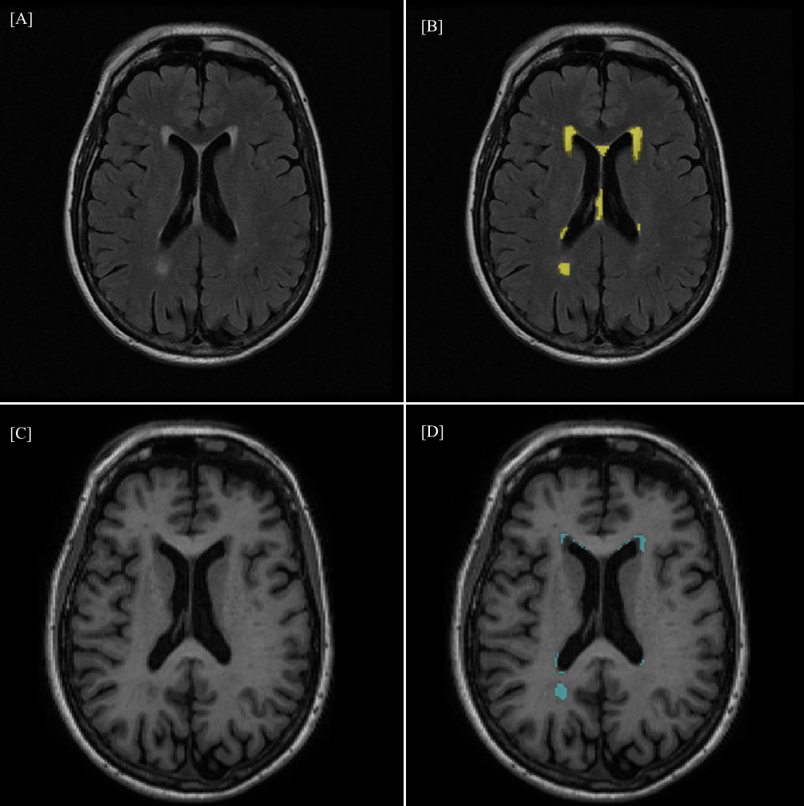

Reasoning and Activity Recognition
Lockheed Martin
June 2020 - . . .
I'm currently researching machine learning for activity recognition using Pytorch. More information will
come as my project progresses.
Treasure Hunter
June 2020
This is a small turn-based rpg I made
using React and Redux. It was primarily for me to practice using Redux
and was heavily inspired by Pokemon.
Link.

Douglas Nguyen, DDS
May 2020
This application made on React and Node.js with MongoDB allows Dr. Douglas' 1500 monthly patients to
check in through a web app instead of having to call in during COVID19 times. The administrative side shows
an interactive check list of patients that can be managed by staff.

Anomaly Detection
National Aeronautics and Space Administration
June 2019 - August 2019
During my internship at NASA, I developed an unsupervised Convolutional LSTM-Autoencoder for
fault detection in Rate Gyro Sensor data from the Space Launch System.

Leukoaraiosis Severity Assessment
Huntington Medical Research Institutes Neuroimaging Lab
December 2018 - June 2019
Leukoaraiosis is an essential change in white matter with aging, indicating ischemic microvascular disease
which is now understood to be a significant predictor of risk for Alzheimer’s Disease. I created a U-Net
in Tensorflow that was trained on white matter hyperintensity labels in order to generate a mask of
white white matter damage on T2-FLAIR magnetic resonance images. I presented my work at Honors
Transfer Council of California Research Conference and eventually received a research scholar award with
$1000.

Tuberculosis Diagnosis
August 2018 - April 2019
This was my first large-scale project. I worked with a professor from the U.S. Airforce Academy
to develop a Convolutional Neural Netowrk in Tensorflow that would diagnose Tuberculosis in chest x-rays. I presented
this at the Southern California Conference for Undergraduate Research and the Honors Transfer Council of California.
This project was noticed by Huntington Medical Research Institutes and I was invited to lead a project at
their neuroimaging lab.